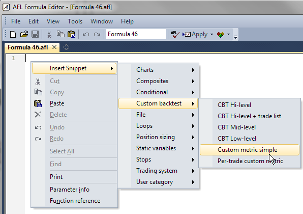
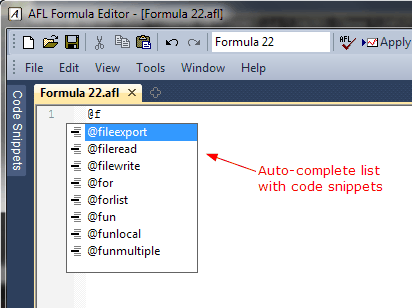
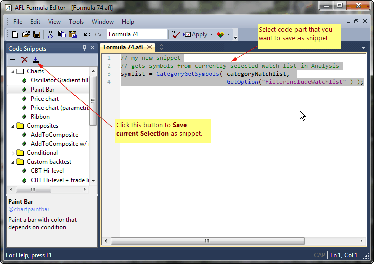
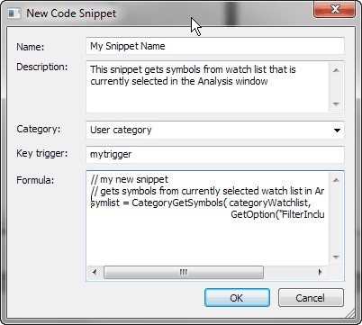
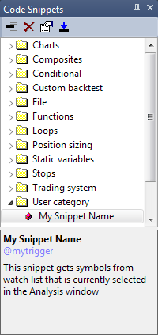
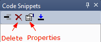

A code snippet is a small piece of reusable AFL code. It can be inserted by:

In version 5.90, code snippets are also available in the auto-complete list in the AFL editor. Just type '@' followed by the first letter of a snippet's key trigger, and the auto-complete list would show you the list of available snippets that have keyboard triggers defined starting with that letter.
Replacement of keyboard triggers works even without auto-complete activated, so, just typing '@keytrigger' is replaced by snippet text.

DEFINING YOUR OWN SNIPPETS
You can add your own snippets fairly easily using the new Code Snippets window. The Code Snippets window is available in the new AFL editor. It can be shown/hidden using the Window menu.
To create your own snippet, do the following:

If you do the steps above, the following dialog will appear:

Now you need to enter the Name of the snippet, the Description, and Category. A category can be selected from already existing items (using a drop-down box), or a new category name can be typed in the category field. The Key trigger field is optional and contains the snippet's auto-complete trigger (described above). The Formula field is the snippet code itself. Once you enter all fields and press OK, your new snippet will appear in the list.

From then on, you can use your own snippet the same way as existing snippets. Perhaps the most convenient method is using drag-and-drop from the list to the AFL editor.
As you may have noticed, user-defined snippets are marked with a red-colored box in the Code Snippets list. Only user-defined snippets can be overwritten and/or deleted.
To edit an existing user-defined snippet, you can either follow the steps above and give it an existing name. AmiBroker will then ask if you want to overwrite the existing snippet, or you can simply click on Properties button and edit the snippet directly, without re-inserting it.

To delete a snippet, select the snippet you want to delete from the list and press Delete (X) button in the Code Snippets window.
TECHNICAL INFO (Advanced users only)
There are two files located in the AmiBroker directory that hold snippets:
CodeSnippets.xml - these are snippets shipped with the AmiBroker installation (and
can be replaced in subsequent installations, so don't modify it!)
UserSnippets.xml - these are user-definable snippets. This file is not present
in the installation, and a user can create it by himself/herself.
The XML schema for the snippets file is simple (as shown below). Key trigger functionality is not yet implemented; however, Key trigger fields should be included in the definition for future use. It will work like 'auto-complete' so that when you type the shortcut, it will unfold to the formula.
<?xml version="1.0" encoding="ISO-8859-1"?>
<AmiBroker-CodeSnippets CompactMode="0">
<Snippet>
<Name>First Snippet</Name>
<Description>Description of the snippet</Description>
<Category>User category</Category>
<KeyTrigger>?trigger1</KeyTrigger>
<Formula>
<![CDATA[
// the formula itself
]]>
</Formula>
</Snippet>
<Snippet>
<Name>Second Snippet</Name>
<Description>Description of the snippet</Description>
<Category>User category</Category>
<KeyTrigger>?trigger2</KeyTrigger>
<Formula>
<![CDATA[
// the formula itself
]]>
</Formula>
</Snippet>
</AmiBroker-CodeSnippets>